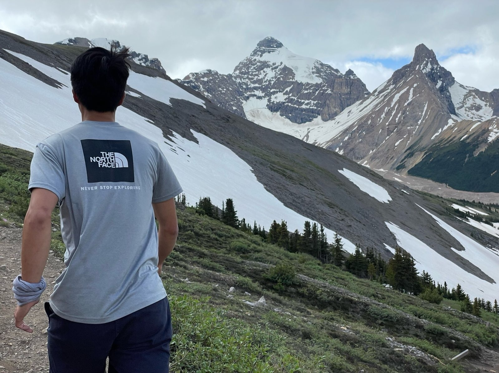

Introduction
By going into nature, I am trying to get away from civilization and its problems. However, it is naive for me to think that these experiences have not been influenced by humankind. I acknowledge that these lands were inhabited by the indigenous people of Canada who were forcibly removed and their history on the lands erased. The areas I have visited are home to many diverse groups of Indigenous peoples who have shared their land under Treaty 6, 7, 8 and the treaties of British Columbia. I honour and acknowledge all of the First Nations, Métis and Inuit peoples who have lived, travelled and gathered on these lands for thousands of years. And still do. As a reminder I have tried to add the indigenous names to these wonderful places1. In another post I explore this complex story further.
The name “Canada” likely comes from the word “kanata,” meaning “village” or “settlement.” In 1535, two indigenous youths told French explorer Jacques Cartier about the route to kanata; they were actually referring to the village of Stadacona, the site of the present-day City of Québec.2

Mountains, wildlife, turqoise lakes, and beautiful crags is what I had been patiently waiting for since booking my tickets to Edmonton. I was getting more and more excited to head up to the world famous Canadian Rockies. Saturday the 16th of July is when we took a small Communauto packed with camping and climbing gear to go for a 13-day adventure totalling 2354 kilometres. Like a typical romcom cliche, it was love on first sight catching my first glimpse of the mountains from Hinton. Upon arrival it is clear why they are so renowned, you notice a certain wonder in the never-ending mountain chain. However, it is only when you get inside the mountain range that you understand its greatness. The Icefields Parkway from Jasper to Banff is a drive of a lifetime. We then continued west through Yoho National Park, Revelstoke, and Whistler taking Highway 99 to the world-class climbing area of Squamish. Finally ending up in Vancouver to go back to the Netherlands. In this post I will share my climbing experiences with you in these areas.
Everywhere you look, there are these beautiful mountains towering over you. There is a certain greatness to them not only in their aesthetic beauty but also a sheer reminder of the forces of Nature. When entering the domain of the mountains, as you look at them, you can only feel small compared to these giants. Yet, there you are going through them one by one. They evoke the sublime, “of greater mysteries and potential beyond the typical”.
Most of the climbing here was only possible because of my good friend Jason who hosted and guided me in these wonderful places!

National Parcs
The Canadian Rockies are home to many gorgeous mountains, snow-white or turquoise lakes, alpine meadows, rivers, and beautiful wildlife. Camping here is a must do to witness the beauty of the mountains up close, just make sure you are protected against mosquitoes and bears. One being more annoying than the other.. Along the Icefields Parkway you are able to witness a numerous amount of wildlife, such as a marmot blocking your hike path, an elk crossing right in front of your hostel or when you drive up to a viewpoint only to be blocked by a black bear at the parking lot. All the viewpoints and hikes are easily accessible: let it be the amazing sunset at Maligne Canyon, the Athabasca & Sunwapta Falls, or the amazing glaciers. The climbing mostly features limestone and quartzite climbing on very good quality walls with beautiful views. There are amazing sport routes all over the place!
Weeping Wall
Between Jasper and Banff you will not be able to count the number of mountains and amazing limestone walls. Right in the middle of these two mountain towns, we started off climbing at Weeping Wall, a wall at the base of Cirrus Mountain. As these walls are covered by waterfalls they are notorious for ice climbing in the winter, however, we decided to climb my first sport route in Canada just next to these falls.
After a gruelling Tonquin Valley backpacking trip the days before and a trail run at Parker’s Ridge just a few hours before my excitement beat my fatigue to go up this beautiful wall. The short approach to these walls was a bit of a scramble with a lot of loose rock at the base and unclear pathing but very doable. The wall was of very good quality with amazing lines on them. We decided to do a 35m slab route which brought spectacular views of the falls next to you, a slow moving Athabasca river and a mountain ridge behind you.
The only problem was that the guide book mentioned this route was doable with a 60m rope. Our assumption was that it would be doable as you would have a straight line from the top to the bottom making the route shorter. It was not. We had to rappel and downclimb the last part of the route, while not preferred was doable. Another problem was that after getting the rope up to the middle for the rappel I applied a clove hitch a bit too low, which resulted in uneven strands for the rappel. It was quite a hassle to get them even again. Now I learnt to not trust guide books too much and be conscious about the mark in the middle for a rappel.
Don’t always trust the guide book. Double check everything before going down.
Tunnel Mountain (Sacred Buffalo Mountain)
The contemporary name Tunnel Mountain comes after some surveyors of the Canadian Pacific Railway suggested to create a tunnel through the mountain for their railway, however, it never happened. The Stoney people called it Eyarhey Tatanga Woweyahgey Wakân (Sleeping Buffalo) for a long time, as it looks like one. But as Banff reintroduced wild bison in 2017 they do not consider the mountain to be asleep anymore.3
My first multipitch experience was a mix of the worst and best emotions you can have while climbing. Located near the picturesque town of Banff near the Bow River (Makhabn / river where the bow reeds grow) the climbing side features amazing views of Mount Rundle (Waskahigan Watchi / House mountain), the Bow river and many many more mountain tops. It was spectacular. There is no doubt in my mind that the climber’s high gets tremendously elevated. Every step you take is one further away from the ground, becoming more and more enthralling. While you obviously do the climb with the two of you, you only see each other at the anchor stations. The rest of it? It was 201m of pure climbing on the wall that lets you be alone with yourself.

The route was graded 5.10a (6a) as Jason led the whole multipitch by himself (!!). I had an amazing experience doing River Run belayed from the top every time. The climb is amazing with a very natural flow to it. The stone was excellent, you cannot wish for better. The lines had a mix of everything, ranging from creative traverses, to slabs to some very hard overhang sections. Having 0 falls and 0 takes I couldn’t be prouder of my climbing in this breathtaking landscape seeing Mount Rundle (Waskahigan Watchi). This part made me say that doing this multipitch was a great choice.
However, there was also a part of me which questioned if it was sensible to do this multipitch without any experience. The route had some very difficult sections and moves in them which wouldn’t make it a 5.10a. My self-doubt and frustration mostly came from belaying and my fight with the many curls and twists in the new 70m rope resulting in short roping. Tensions were high as more and more hours stacked on top of each other. It took 6.5 hours to finish this route. In hindsight, the grigri frustrated more than the benefits of the device. I would not want to repeat this experience on a multipitch again.
New rope can easily coil with the use of a grigri, preferably you break it in with a tube-style device.
The relief and the reward that came standing on top of the sleeping Buffalo was an incredible release of emotions. Crawling from the woods to get on a popular hike trail you are rewarded with a spectacular view of the other side of the mountain. Still full of adrenaline from the climb we managed a small run down the mountain towards the car. :)
The Back of Lake Louise
Lake Louis (Horâ Juthin Îmne / Lake of the Little Fishes) is one of the more popular attractions in the national parcs, with a stunning view of a turquoise lake with its glacier in the background. What attracts me more, after going through the groups of people taking pictures is that there is some spectacular climbing some 15 minutes from the main viewpoint. Open a regional climbing guide and there is no doubt that it features a picture of someone climbing these walls here.
As we are with a crew of three now, we walked through these iconic walls searching for a wall with good cover against the irregular rainfall this day. We started off doing two routes on Blob Rock in which I had the pleasure of leading for the first time: Castle Anthrax (5.9) and The Black Knight (5.10a) around 22 meters. They were reachy and pumpy routes but you are rewarded with good feet for some rest. While being easy in grade, they make up for it by having to find creative solutions to advance the route. It was a beautiful vertical wall made out of some amazing quartzite.

Our last route was another creative 5.9 called Fiddler on the Roof on Hillside Wall. It was this amazing airy left-trending arch where if you stayed close to the arch you had nothing under your feet. Looking down to place your feet was scary and fun at the same time! This route was amazing for crossing your feet and switching it up, never knowing where exactly you had to go to get to the next bolt.
For belaying you had to get up a small ledge but the anchor point was far left of this point. As I was the last one on the route I retrieved the quickdraws by pulling the rope to get to the right coming back. Getting each quickdraw increased the swing to the left. As I unclipped the first quickdraw first and then the second quickdraw in one go I forgot to take them out of my rope. This resulted in my belayer and I getting swung to the left. Luckily he caught the swing and only left with some scratches but this could have been bad. I learnt that arches and diagonal clips are very hazardous for the climber and the belayer which require more care and consideration.
For next time it is smarter to take the quickdraws as you go up, or have the belayer stand right beneath the anchor point to prevent a swing.

Squamish (Sḵwx̱wú7mesh)
Squamish is a region renowned for its climbing, with a lot of accessible climbing routes available anywhere. The rock is granite and is simply lovely. We drove there from Banff to Revelstoke onto Highway 99 which was an amazing roadtrip experience. Steep hills and car roads swivelling up the mountain with deep valleys - it is a totally different area than the Rockies but as equally impressive. With a quick stop in Whistler the trip got us pretty hyped to see the climbing areas. Squamish itself and the camps are covered by a lot of forests giving you beautiful views as the light scatters on your tent.
Fun fact: it rains even more than the Netherlands, from October to April - 3 times as much.4
Cheakamus Canyon
A whole day full of climbing, all in different locations, yet so accessible and close we got a lot of climbing in. We started off doing another multipitch named Star Check (5.8+), with a high of 85 meters it is not as tall as River Run but the twist here is that a thunderous Cheakamus River is right beneath you when you climb. From the parking lot you hike to the base of the wall, the first anchor point is almost in the water. Not only that, as you climb, you climb on the edge of the wall making the views of some faraway mountains constantly visible during the climb. While the rope did coil a little bit, it was not as bad as before making belaying way more enjoyable. The wall gives you a lot of playtime how you go up, whereas I went more on the edge you can also do a more slabby approach on the face.
A quote I read in Johnston Canyon from Walter J. Phillips: > “Water is the most expressive emotion in nature. It responds to every mood from tranquillity to turbulence”.
Listening to the water and watching it ravage beneath you is an experience I will not soon forget.

Shannon Falls (Kwékwetxwm)
Kwékwetxwm is the Squamish name for this breathtaking waterfall known for the deep rumbling sound of its cascading torrents. Kwékwetxwm is a highly used resource gathering area because of its proximity to the nearby village of Stawamus. This was a prominent deer and raccoon hunting area. The mythological hero Xwéch’taal (the serpent slayer) used this as an access route in his pursuit of Sínulhka, the dreaded double headed sea serpent. The path of Sínulhka reeked of spiritual power necessitating Xwech’taal to find a parallel path then the serpent climbed Siám’ Smánit (the Chief Mountain). He purified himself in the waters of Kwékwetxwm to strengthen his mind, body and soul. (December 2011 from: Cultural Journey Sea-to-Sky Corridor website, Squamish and Lil’wat First Nations)5
From there we continued to another location, aptly named Shannon Falls. However, this time we could not see it but only hear the fall as we went up to the very slabby AMO wall. Without a guide book of this area it became more difficult to determine what routes and grades we were actually doing. So get a guide book! And as a tip, you might even find the book in a secondhand bookstore nearby (we did but decided not to buy it..). What we did know, was that it would be a good opportunity for me to lead my first multipitch climb. On Mountain Project it had a nice easy route but it was difficult to find it. I led one route, however, it did not continue further than those anchors which was only visible once you reached the top. For experience I belayed from the top anyways and we then rappelled down.
While we both did not like slab routes we continued on. The sun was baking us and our rubber shoes onto the wall making the slab climbs even harder. Being out of your comfort zone is how you grow right? This route was one of the hardest slab routes I have tried, there were almost no good foot holds and rests. For many of the sections there were very bad hand holds forcing you to trust your feet and stand up on practically nothing. Leading this route was very challenging and it took a lot of endurance out of me, yet it was a big step for me how to lead scary routes. After doing the first pitch we decided to cancel and rappel down due to time constraints.
Get a guide book! And there are no easy slab routes.

Juniper Point
Getting here at sunset while meeting our third climber (who brought food for us!) was probably the best end of this climbing day. This is only 40 minutes away from Vancouver with the ability of cliffside climbing and good anchors for toproping. It is simply a stunning place to climb as the red sun glow hits the islands in the background, while you climb above the Pacific Ocean. It features a mix of easy and hard routes with the hardest one we did being a 5.10b/c on some beautiful overhang walls.
We continued to climb in the dark with headlamps, which created amazing conditions for climbing in a flow as you have to go step by step. The solitude and the darkness creates an even more intimate experience on the wall. Learning moment: just make sure when you do this to know the way back in the dark and check if any gates close after certain hours!
Murrin’s Park
This is the last climbing spot before I head back to the lowlands. And what a place to end it on. So many crags. So so many. There are even official signs showing you the way to the walls. In the heatwave this place was an absolute life saver with its many trees giving us cover and a beautiful lake to swim in. We first went onto Milkman’s Wall on the route Jugs, Not Drugs (5.8) is a classic according to the internet and gave us a nice warm up. Giving me a good catch phrase for further use too. We then continued to Genesis wall which had a beautiful diagonal crack line in it called Original Thin (5.10c). My most difficult climb in Canada with a lot of compression moves but every move felt beautiful. A ton of opportunity for heel hooks, good underclings, and crimpy side pulls force you to climb in a technical way.
We then moved on to Pet(trifying) Wall a bit further than where we started. When you get there, you immediately know this wall is a special one as you cannot see both ends at the same time. We struggled a bit with finding the right routes as we did not have a climbing guide book so vague statements online is what we had to deal with. This is definitely not recommended as you don’t know what you climb! There are a lot of 5.11+ and 5.12+ routes here but we managed to get the right routes in the end. Once on the wall everything seemed to click. Route finding was still a bit tricky as I had to traverse numerous times because I chose the wrong direction but it is beautiful to climb on Heavy Petting Action (5.10b). It had everything: great flakes, good ledges, a tricky roof section but also a chimney section at the end. It did seem the route would never stop as I got more and more tired but with its 27 meters it was still fairly doable.

A nice swim in Browning Lake on this heat summer day was an amazing reward after the climb!
The End
To sum it up, the climbing in Canada is incredible. I feel like I have written this 7 times over using slightly different phrasing in this article. That alone would have made it worthwhile to go but when you combine it with everything else (another blog post, soon!) it becomes an incredible adventure. Quick ten minute adventures here are full experiences. And they are worth pursuing.
It has not been often that my vacation was so much focused on climbing. I believe climbing lets you experience nature in a totally different way. That small time when you are on the wall battling to get higher surrounded by wilderness is special. The wilderness and climbing lets you be alone with yourself, so you are able to find yourself. But do not underestimate the hard work that goes into it. Jason quoted to me “Earn your turns” famous in skiitouring referring to the hard work that goes into getting to the top to ski down. The same mantra can be applied to climbing, you earn all the beautiful viewpoints, hikes, food, and rests when you finish a hard climb. Which makes me enjoy everything a little bit more.
I have added the learning moments to showcase the dangers and risks of climbing outdoors. They are my constant reminder to remain vigilant in order to be as safe as possible for me and my friends. My experience in Canada reflected on my relative inexperience in climbing outdoors which tells me to take it even more slow and cautious. 
Footnotes
https://yellowheadinstitute.org/2019/10/08/reclaiming-indigenous-place-names/↩︎
https://www.canada.ca/en/canadian-heritage/services/origin-name-canada.html↩︎
https://www.canada.ca/en/canadian-heritage/services/origin-name-canada.html↩︎
https://www.wikiwand.com/en/Squamish,_British_Columbia#/Climate↩︎
https://apps.gov.bc.ca/pub/bcgnws/names/15369.html↩︎